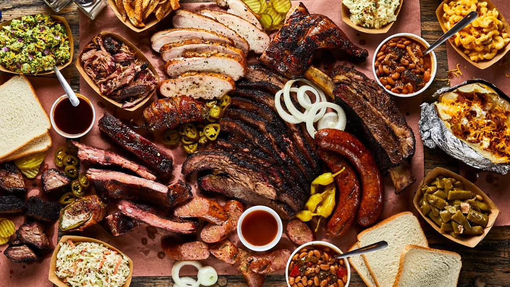
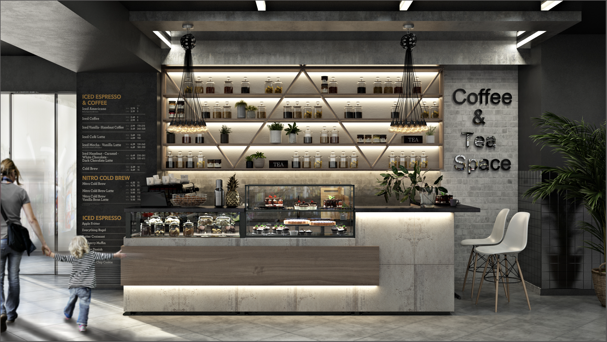

library(tidyverse)
library(plotly)
library(ggplot2)
library(knitr)
library(readr)This section provides an overview of the types of restaurants in Manhattan, their distribution, and the scoring scales used in health inspections.
# First, we will import the data and remove rows with missing restaurant name, cuisine type, grade, or score, then create a new variable called region
manhattan_data = read_csv("Manhattan_Restaurant_Inspection_Results.csv", na = c("NA", "", "."))
str (manhattan_data)
## spc_tbl_ [94,616 × 27] (S3: spec_tbl_df/tbl_df/tbl/data.frame)
## $ CAMIS : num [1:94616] 50140436 50158081 50152703 50160975 50161087 ...
## $ DBA : chr [1:94616] "JUST SALAD" "THE MANNER" "MIDNIGHT BLUE" "BLUE BLOSSOM" ...
## $ BORO : chr [1:94616] "Manhattan" "Manhattan" "Manhattan" "Manhattan" ...
## $ BUILDING : chr [1:94616] "2853" "58" "106" "108" ...
## $ STREET : chr [1:94616] "BROADWAY" "THOMPSON STREET" "EAST 19 STREET" "WEST 39 STREET" ...
## $ ZIPCODE : num [1:94616] 10025 10012 10003 10018 10025 ...
## $ PHONE : num [1:94616] 7.32e+09 9.17e+09 3.48e+09 6.47e+09 9.29e+09 ...
## $ CUISINE DESCRIPTION : chr [1:94616] NA NA NA NA ...
## $ INSPECTION DATE : chr [1:94616] "01/01/1900" "01/01/1900" "01/01/1900" "01/01/1900" ...
## $ ACTION : chr [1:94616] NA NA NA NA ...
## $ VIOLATION CODE : chr [1:94616] NA NA NA NA ...
## $ VIOLATION DESCRIPTION: chr [1:94616] NA NA NA NA ...
## $ CRITICAL FLAG : chr [1:94616] "Not Applicable" "Not Applicable" "Not Applicable" "Not Applicable" ...
## $ SCORE : num [1:94616] NA NA NA NA NA NA NA NA NA NA ...
## $ GRADE : chr [1:94616] NA NA NA NA ...
## $ GRADE DATE : chr [1:94616] NA NA NA NA ...
## $ RECORD DATE : chr [1:94616] "11/05/2024" "11/05/2024" "11/05/2024" "11/05/2024" ...
## $ INSPECTION TYPE : chr [1:94616] NA NA NA NA ...
## $ Latitude : num [1:94616] 40.8 40.7 40.7 40.8 40.8 ...
## $ Longitude : num [1:94616] -74 -74 -74 -74 -74 ...
## $ Community Board : num [1:94616] 109 102 105 105 107 108 101 105 104 102 ...
## $ Council District : chr [1:94616] "07" "01" "02" "04" ...
## $ Census Tract : chr [1:94616] "019900" "004700" "005000" "011300" ...
## $ BIN : num [1:94616] 1075440 1087362 1017905 1015273 1055676 ...
## $ BBL : num [1:94616] 1.02e+09 1.00e+09 1.01e+09 1.01e+09 1.02e+09 ...
## $ NTA : chr [1:94616] "MN09" "MN24" "MN21" "MN17" ...
## $ Location Point1 : logi [1:94616] NA NA NA NA NA NA ...
## - attr(*, "spec")=
## .. cols(
## .. CAMIS = col_double(),
## .. DBA = col_character(),
## .. BORO = col_character(),
## .. BUILDING = col_character(),
## .. STREET = col_character(),
## .. ZIPCODE = col_double(),
## .. PHONE = col_double(),
## .. `CUISINE DESCRIPTION` = col_character(),
## .. `INSPECTION DATE` = col_character(),
## .. ACTION = col_character(),
## .. `VIOLATION CODE` = col_character(),
## .. `VIOLATION DESCRIPTION` = col_character(),
## .. `CRITICAL FLAG` = col_character(),
## .. SCORE = col_double(),
## .. GRADE = col_character(),
## .. `GRADE DATE` = col_character(),
## .. `RECORD DATE` = col_character(),
## .. `INSPECTION TYPE` = col_character(),
## .. Latitude = col_double(),
## .. Longitude = col_double(),
## .. `Community Board` = col_double(),
## .. `Council District` = col_character(),
## .. `Census Tract` = col_character(),
## .. BIN = col_double(),
## .. BBL = col_double(),
## .. NTA = col_character(),
## .. `Location Point1` = col_logical()
## .. )
## - attr(*, "problems")=<externalptr>
cleaned_data = manhattan_data %>%
janitor::clean_names() %>%
filter(
!is.na(dba),
!is.na(cuisine_description),
!is.na(grade),
!is.na(score),
!is.na(zipcode)
) %>% mutate(region = case_when(
zipcode >= 10000 & zipcode <= 10025 ~ "Downtown",
zipcode >= 10026 & zipcode <= 10040 ~ "Midtown",
zipcode >= 10041 & zipcode <= 10282 ~ "Uptown",
TRUE ~ "Other" # For ZIP codes like 11371, 12345, etc.
))# we will Filter for the top 10 cuisine types
top_10_cuisines = cleaned_data %>%
count(cuisine_description, sort = TRUE) %>%
slice_max(n, n = 10) %>%
pull(cuisine_description)
filtered_data = cleaned_data %>%
filter(cuisine_description %in% top_10_cuisines) %>%
distinct(camis, dba,cuisine_description)
# Create an EDA histogram using plotly
cuisine_plot = filtered_data %>%
count(cuisine_description) %>%
mutate(cuisine_description = fct_reorder(cuisine_description, n)) %>%
plot_ly(
x = ~cuisine_description,
y = ~n,
type = 'bar',
color = ~cuisine_description,
colors = "viridis") %>%
layout(
title = "Top 10 Cuisine Types in Manhattan",
xaxis = list(title = "Cuisine Type"),
yaxis = list(title = "Count N")
)
cuisine_plotThe 2456 American cuisine restaurants
dominates the dining scene, reflecting its widespread
appeal and availability. Popular cuisines such as
Chinese, Italian, and Japanese highlight Manhattan’s
global culinary diversity, catering to a broad range of
tastes.
We find out that
1062 coffee and tea establishments are notably abundant,
suggesting a strong demand for quick-service options among the busy
urban population. Meanwhile, niche categories like bakery products,
sandwiches, and French cuisine add variety to the dining landscape. Our
plot underscores the rich and diverse food culture that
defines Manhattan.

American Food

Coffee and Tea
::::